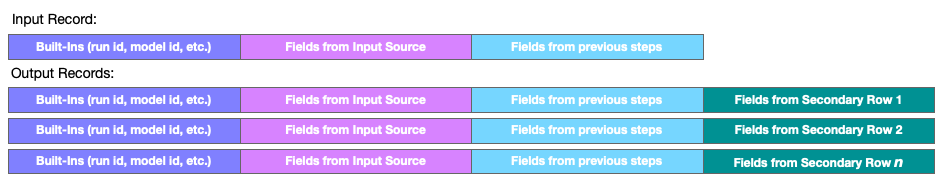

Combine Data Step
This step combines the current record with data from a secondary source. The step reads up to 10,000 rows from this source, then, for each record received by the step, combines that data with each row of the secondary data. Combine steps support filters that cause only combined rows meeting certain criteria to be emitted. Criteria allow for interesting combinations, such as unique joins. Depending upon the configuration, this step can emit multiple records to the next step for each record the step receives.
Configuration
To configure a Combine step, specify the source of the data that will be combined with records received by the step. You can select from two options:
- Input from Job Configuration - Select this option when you want to connect the step to a specific data source in a Job. You can enter the data fields required by this step by entering them in the Input Fields section. The IMPORT button will allow you to select a data source you have previously configured and import the entire structure from that source.
- Input from Working Table - Select this option when the input of step is coming from an in-memory working table that has been populated by a previous stage. Working tables allow stages to share data and produce an analysis incrementally.
Finally, you may specify an optional Filter that will conditionally match records.
Test Data
Once one or more data fields have been defined, you will see a button labeled Test Data in the upper right corner of the Input section. Clicking this button will allow you to set up a few records of sample data, which you can use to test your sequence of steps while editing a flow stage.
See also: About Stage Steps, Testing a Stage